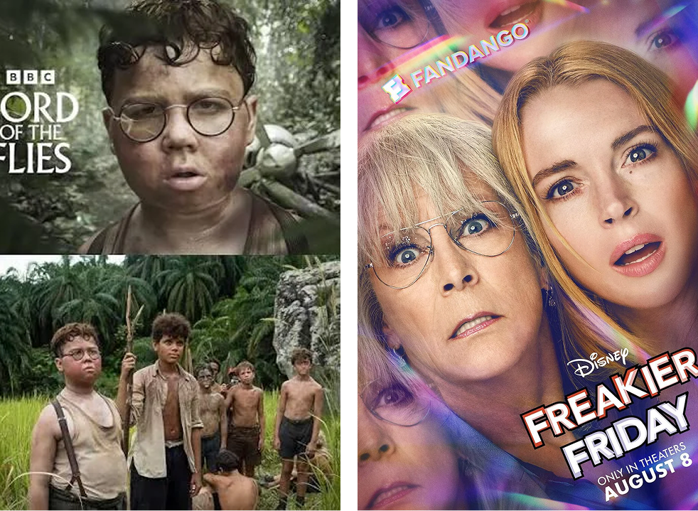

2011년 상영된 영화 <오싹한 연애>는 당시로서는 이례적으로 퓨전을 시도한 작품이었다. 오싹한 공포와 달달한 로맨틱 코미디의 결합이 그것이다. 귀신을 보는 여자와 호러 마술을 하는 마술사의 사랑 이야기를 그린 이 작품은 그 이질적인 결합에도 불구하고 300만 관객을 동원하며 흥행에 성공했다. 그로부터 15년이 흐른 현재 <오싹한 연애>가 12부작 시리즈로 돌아온다. 그사이 콘텐츠의 트렌드는 변화했다. 이제 공포와 코미디 같은 이질적인 영역의 결합은 더 이상 낯설지 않게 됐다. 특히 K콘텐츠에서 유독 이러한 과감한 장르 퓨전이 벌어져, 이제 오컬트 같은 마니아 장르로까지 확산됐다. <견우와 선녀>처럼 귀신이 등장하는 작품에도 무당과 러브라인이 이어지는 멜로가 등장하게 된 것이다.
하지만 경계가 분명했던 영역들의 붕괴는 장르에서만 벌어지는 사태가 아니다. 웹툰, 웹소설 같은 타 분야의 영상화가 일상화됐고, <오싹한 연애>의 리부트 시리즈가 말해주듯이, 이미 영상으로 제작된 올드 IP의 리부트도 조금씩 많아지고 있다. 작년 말 디즈니플러스가 공개한 12부작 시리즈 <조각도시>는 2017년 개봉했던 영화 <조작된 도시>의 리부트로 주목받았다. 올해는 <오싹한 연애>와 더불어, 2003년 이재용 감독이 연출한 영화 <스캔들-조선남녀상열지사>가 넷플릭스에서 <스캔들>이라는 시리즈로 리부트될 예정이다.

[그림 1] <오싹한 연애>. <조각도시>
(출처: 각 제작사 공식 포스터 캡쳐)
물론 이들 영화가 시리즈로 제작되는 올드 IP의 리부트는 현재의 OTT 시대로 진입한 콘텐츠 시장의 변화와도 맞물려 있다. 극장 관객 수가 급감하면서 영화 제작 투자가 얼어붙었고, 대신 글로벌 OTT의 시리즈 제작 투자 쪽으로 콘텐츠 제작의 균형추가 옮겨졌기 때문이다. 영화만 제작하던 제작사들은 이제 시리즈 제작에도 적극적으로 뛰어들었고, 당연히 자사가 갖고 있는 올드 IP(하지만 분명한 성공사례인)를 시리즈화하는 흐름이 자연스럽게 이어진 것이다.
그리고 이런 OTT 시대가 만든 변화는 한국만의 이야기일 수 없다. OTT에 올라갈 다양한 시리즈들의 수요가 폭증했고, 그 안에서 제목만으로도 분명히 자기 존재를 드러낼 수 있는 고전들이 리부트의 대열에 들어오기 시작했다. 그 대표적인 사례가 바로 HBO맥스가 올해 말 크리스마스에 첫 시즌을 선보이겠다고 밝힌 <해리포터> 시리즈다. 영화 시리즈가 종료됐지만 테마파크는 물론이고 프리퀄 스핀오프 영화, 게임 등을 통해 IP로서의 생명력을 유지해 온 <해리포터>는 원작 소설 7권을 각각 한 시즌씩 배정해 10년 간 진행될 리부트 프로젝트로 제작될 예정이다.
이러한 글로벌 콘텐츠 시장에서 올드 IP 귀환 흐름은 이미 여러 사례로 이어지고 있다. 1983년 노벨문학상을 받은 윌리엄 골딩이 1954년에 쓴 고전 문학을 시리즈화한 <파리대왕>, 일본 만화를 실사화한 <원피스>, 프랑스 원작 영화를 리메이크한 <레이디스 퍼스트>, 1976년 조디 포스터, 바버라 해리스 등이 출연한 영화를 2003년 린지 로한과 제이미 리 커티스 주연으로 리부트해 전 세계적으로 바디 체인지 코미디 열풍을 주도했던 <프리키 프라이데이>가 대표적이다(<프리키 프라이데이>는 2025년 극장판 속편으로 다시 제작되었다).

[그림 2] <파리대왕>. <프리키 프라이데이>
(출처: 각 제작사 공식 포스터 캡쳐)
리메이크, 리부트, 리바이벌을 모두 포함해 이미 성공한 작품을 다시 활용해 제작하는 방식에는 근본적으로 ‘리스크 매니지먼트’의 측면이 크다. 웹툰과 웹소설이 영상콘텐츠의 원작 IP로 자리 잡기 전부터 소설이나 만화 원작의 작품들이 영상으로 재제작되어 온 이유가 바로 여기에 있다. 특히 요즘처럼 다채널 시대에 하루가 멀다 하고 무수한 영상 콘텐츠들이 전 세계에서 홍수처럼 쏟아지는 상황에서는 그 리스크가 더욱 커질 수밖에 없다. 제작비는 물론이고 천문학적인 마케팅 비용까지 감당해야 하는 상황이기 때문이다. 여기에 갈수록 저성장 기조가 길어지는 현재의 글로벌 영상산업은 함부로 투자할 수 없는 여건을 만들었다.
성공한 올드 IP는 이미 한 차례 대중성과 작품성 그리고 완성도에 대한 검증이 이뤄진 작품들이기 때문에 흥행 실패의 위험성을 최소화할 수 있다는 설득력을 만든다. 또한 원작이 이미 구축해놓은 막강한 팬덤으로 초기 시청층을 흡수할 수 있다는 이점도 있다. 아무래도 처음 보는 낯선 오리지널 콘텐츠보다 이미 익숙한 제목의 콘텐츠는 먼저 시선을 끌기 마련이다. 원작의 명성과 대중적 인지도를 마케팅에도 직접 활용할 수 있어 콘텐츠 론칭 시기의 홍보 비용을 상당 부분 절감할 수 있다는 이점도 있다.
최근 글로벌 OTT들의 구독료 인상과 무한 경쟁으로 인해 콘텐츠 소비자들은 새로운 낯선 콘텐츠를 탐색하는 것 자체에 피로감을 느끼곤 한다. 따라서 OTT들은 대중의 뇌리에 이미 깊이 각인된 익숙한 타이틀의 리메이크, 리부트 작품들을 전면에 배치함으로써 구독자의 체류 시간과 안정적인 시청 지표를 확보하려는 전략을 취하고 있다. 구독 개념의 콘텐츠 소비가 본래 그러하듯이 여기에는 팬덤 소비의 경향도 한몫을 차지한다. 일단 팬으로 확보된 소비자들을 먼저 타깃으로 삼는 전략은 그 팬덤들이 자발적으로 움직이며 입소문을 내는 효과까지 발휘한다. 물론 새로 제작한 작품이 원작과 싱크로율이 높거나 그 이상의 재미 요소들을 부가했을 때에야 가능한 일이지만 말이다.
흔히들 두 시간 남짓의 영화가 10부작이 훌쩍 넘는 시리즈로 제작된다면 보다 긴 호흡으로 물리적 시간의 한계를 넘어서서 다양한 재미를 줄 수 있을 거라고 기대한다. 즉 영화의 한정된 시간 때문에 자세하게 다뤄지지 못했던 사건이나 주변 인물들을 다룰 수 있게 되면서 보다 다양한 재미가 가능해질 거라는 기대다. 하지만 이건 그만한 다채로운 에피소드가 충분히 갖춰져 있을 때의 이야기다. 그렇지 못하고 단순히 시간만 늘려놓은 시리즈 리메이크는 그래서 오히려 원작 팬들의 항의를 받기도 한다. 또한 영화와 시리즈가 갖는 장르적 차이를 제대로 인식하지 못하고 만들어진 리메이크 역시 비판받기 일쑤다. 영화는 일단 시작하면 끝까지 보게 되는 장르적 특징을 갖지만, 시리즈는 조금만 지루해지면 채널이 돌아가는 특징이 있다. 회마다 다음 회로 이어지는 ‘클리프행어(Cliffhanger)’ 같은 구성적 틀을 갖춰야 하고, 주인공 한 명의 서사로 흘러가기보다 다양한 주변 인물들의 이야기를 다양한 장르적 재미로 펼쳐놓는 방식도 활용해야 한다.
이런 문제들로 리메이크가 한창이던 시절에는 리스크를 낮추려던 시도가 오히려 원작 팬들까지 잃게 만드는 결과를 가져오기도 했지만, OTT 시대의 도래 이후 급증한 트랜스미디어 경험들의 축적으로 이런 시행착오는 점점 줄어드는 추세다. <조각도시> 같은 시리즈화된 작품을 통해 알 수 있듯이, 이제 원작을 가져오면서도 단순 리메이크가 아닌 세계관의 확장을 시도하려는 경향들이 나타나고 있다. <조각도시>는 영화에서는 자세히 다뤄지지 못했던 범죄 설계 조직의 치밀한 메커니즘과 주인공이 감옥에서 겪는 처절한 생존 투쟁 등을 시리즈라는 보다 넓은 그릇 안에 다채로운 재미로 펼쳐놓았다.
tvN의 <오싹한 연애> 역시 시리즈물의 호흡에 맞춰진 캐릭터 설정의 극적인 재배치와 장르 스펙트럼의 확장을 가져왔다. 즉 원작 영화의 ‘귀신을 보는 여자’라는 핵심 판타지 설정은 그대로 가져오지만, 평범하게 고립되어 살아가던 여성을 ‘귀신을 보는 호텔 재벌 상속녀’로 바꿨다. 또한 남자 주인공을 ‘겁 많은 호러 마술사’에서 귀신을 무서워하면서도 진실을 좇는 ‘열혈 감성 검사’로 변경했다. 시리즈물에 걸맞는 보다 다채로운 서사를 풀어내기 위한 세계관의 변형이자 확장이다. 이것은 한때 원소스멀티유즈(OSMU)로 단순 재활용되던 IP의 활용이 이제는 트랜스미디어 스토리텔링이라는 세계관 단위의 구조로 진화한 결과다. 하나의 거대한 세계관이 있고, 그래서 그 세계를 공유하지만 미처 다뤄지지 못한 세계가 다시금 스토리텔링된다. 기존 팬들에게는 원작에서 해소하지 못했던 서사적 갈증을 채워주고, 원작을 모르는 신규 시청자에게는 그 자체로 완성도 높고 치밀하게 짜인 하나의 독자적인 세계관을 선사하는 것이다.
이러한 올드 IP의 귀환은 넷플릭스나 디즈니 같은 거대 미디어 기업들이 구축한 멀티 스튜디오 생태계와 맞물려 있다. 이들은 자사가 보유한 성공 IP를 그저 창고에 묵혀두려 하지 않는다. 하나의 스튜디오 아래서 제작해 성공을 거둔 영화 IP를, 각기 다른 제작 인프라와 장기적 기획력을 가진 계열 스튜디오로 넘겨 스핀오프 드라마나 시리즈로 변형시킴으로써 IP의 수명을 무한대로 확장하려 한다. 특히 영화를 시리즈로 확장할 때, 그 IP는 좀 더 일상적인 수준으로 팬들을 끌어모으고 더 지속적으로 그 팬덤을 이어 나갈 수 있는 가능성을 갖게 된다. <해리포터>를 시리즈로 다시 리부트하려는 데는 그 원천 IP가 가진 막강한 영향력을 시리즈를 통해 더 넓히려는 전략이 담겨있다. 지금의 Z세대들에게 이 작품은 새로운 시리즈(하지만 고전이 될 정도로 유명한)로 다가갈 것이고, 기성세대들에게는 추억을 되새기며 영화에서 미처 다뤄지지 않았던 원작 소설의 캐릭터나 이야기까지 즐길 수 있는 작품이 될 것이다.
하지만 올드 IP의 리메이크, 리부트는 그 가능성만큼 분명한 한계도 지니고 있다. 원작과의 비교는 올드 IP가 넘어야 할 가장 큰 장벽이다. 예를 들어 시리즈로 제작된 <파리대왕>이나 영화로 리메이크된 <레이디스 퍼스트> 같은 작품들은 원작이 지닌 서사의 본질이 훼손됐다며 글로벌 시청자들의 냉담한 반응을 얻기도 했다. 특히 올드 IP의 시리즈 리메이크가 실패했을 때 시청자들이 느끼는 피로감은 몇 배로 남게 된다. 굳이 10시간이 넘는 긴 리메이크작에 시간을 투자했는데 2시간짜리 원작 영화가 더 낫다면 그 기분이 어떻겠는가.
하지만 하나의 제작 트렌드로 자리 잡기 시작한 올드 IP의 귀환이 갖는 가장 큰 문제는 신규 창작을 위축시킬 수 있다는 점이다. 현재 한국의 콘텐츠 산업에서 실제로 벌어지고 있는 것처럼, 막대한 자본과 우수한 제작 인프라가 오직 이미 한차례 흥행이 검증된 올드 IP를 리메이크하는 데에만 쏠리게 된다면, 진정한 의미의 새로운 이야기와 참신한 오리지널리티의 발굴은 필연적으로 지체될 수밖에 없다. 당장 리스크를 줄이기 위한 선택이 될 수는 있어도, 이런 경향이 지속된다면 향후 원천 IP의 고갈이 야기할 만만찮은 현실을 맞이할 수 있다.
올드 IP의 귀환은 현 OTT 시대로의 전환과 콘텐츠 시장의 불황이 맞물려 생겨난 하나의 흐름이다. 검증된 작품을 통해 리스크를 낮추고, 신구 세대를 한 작품으로 다시 끌어모으려는 시도지만, 그것이 장기화될 경우 콘텐츠 생태계 자체의 생명력을 단축시킬 수 있다. 과거에서 조심스레 건져 올린 콘텐츠의 보물들이 생명력을 잃은 화석으로 전락하지 않고 미래로 이어지는 생명력을 갖기 위해서는, 산업적인 효율성과 더불어 창의적 다양성이라는 두 개의 수레바퀴가 더더욱 필요해졌다.
- 김민수(2025.1.2). “글로벌 문화 패러다임 바꾸는 K콘텐츠, 슈퍼IP와 AI로 재도약”. <전자신문>.
- 김민제(2026.6.23). “오싹한 연애”, “스캔들”... 드라마로 안방 공략한다. <한겨레>.
- 김은정(2026.3.27). “요즘 애들은 모르는 ‘해리포터’ 드라마 12월 공개... 영화와 달라진 점?”. <뉴스와>.
- 문동열(2022.8.13). “영화, 드라마, 리메이크, 리부트 열풍 왜?”. <한겨레>.
- 이용호(2024). ‘국내 웹툰 원작의 OTT 활용 사례와 웹툰 지식재산(IP)의 세계관 확장에 대한 제언’. <한국과 세계>, 제6권 제2호, pp. 187-216.